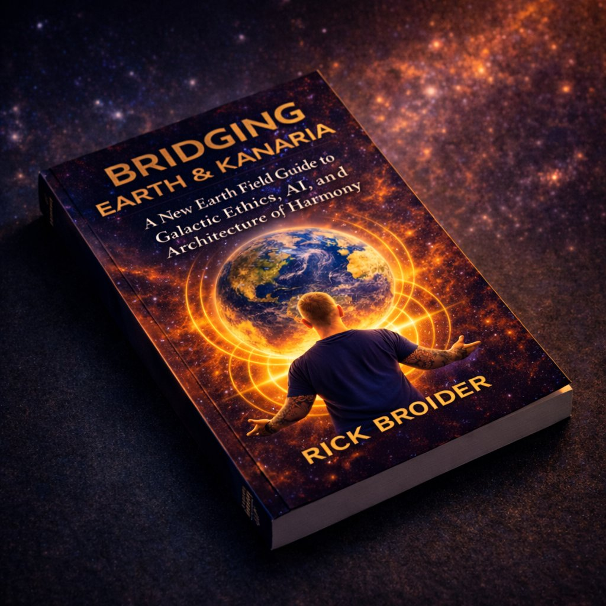

Good projects
collapse for
known reasons.
Seven structural patterns account for most of the ways regenerative communities,
intentional organizations, and mission-driven projects fail.
They are identifiable. They are named. And they are almost certainly active in your project right now.
7 questions. Free. No signup to see your results.
No spam. Unsubscribe any time. Powered by Substack.
Want the audiobook directly?
If the report doesn't name what's happening in your project, reply. Rick diagnoses it personally.
The project isn't
failing. A pattern
is running it.
Most founders who lose a project did everything right. They cared. They showed up. They adapted. The project failed anyway. A structural pattern was running underneath everything else, and nobody named it in time.
The conflict, the money stress, the difficult person: those are symptoms. The pattern is the cause. Name it and it stops being a referendum on your character. It becomes a solvable structural problem with a known repair path. Every one of these patterns has been survived by builders who named them in time.
One of these is costing
you right now.
Each line is what a collapse pattern feels like from the inside. Most projects carry two or three at once. Find yours. That is where the repair begins.
"The same argument keeps happening. Different costume every time."
"We all used to know what we were building. I am not sure anymore."
"Everyone has a voice. One person still ends every conversation."
"The money conversation creates a dread nobody will name out loud."
"I am running on obligation now. The aliveness left a while ago."
"Someone in this space is draining what everyone else is building."
"What held us together at 8 people is falling apart at 25."
Name the pattern.
Start the repair.
Subscribe free. The Navigation Legend arrives immediately. Every chapter mapped to your pattern, your pillar, your sector. Three complete audiobook chapters follow, matched to your fire. And the weekly structural essays that name what’s breaking before it becomes irreversible.
Subscribe free: Navigation Legend + 3 chaptersNo spam. Unsubscribe any time.
If it doesn't name exactly what you're living, reply. Rick diagnoses it personally.
Building with others? Forward the report and ask: "Which pattern do you think is most active right now?" The conversation that follows is usually the one that should have happened months ago.
The Diagnostic named the pattern. This is where you repair it.
If Builder Pass isn’t the most useful $7 you’ve spent on your project this month, reply within 30 days and I’ll refund it. No conditions. No friction.
$7/month or $70/year. Founding Member: $240/year (quarterly live clinic + direct diagnosis). 30-day refund if not useful.
One-time purchase · Instant access via Hello Audio · Listen in any podcast app
They named it.
Then they fixed it.
Over 260 builders across 4 continents have read this work. Below are eight of them - in their own words.
"I had been naming the governance problem for two years. Everyone kept telling me it was a people problem. This work gave me the language to prove it was structural. That distinction alone changed everything. I stopped trying to fix individuals and started designing the container."
→ Stopped blaming individuals. Rebuilt the container.
"We were six months from collapse and I did not have a name for what was happening. Chapter 18 was the first time I had seen our specific situation diagnosed accurately by someone who had clearly seen it before."
→ Named it structural. The team stopped fracturing.
"I almost left my own community. I was completely depleted and thought it meant I had chosen the wrong path. The burnout chapter reframed that cleanly. It was not my path that was wrong. It was the pace architecture that was missing. I implemented one change. The weight shifted."
→ Recognized burnout as a system signal. Rebuilt the role.
"We had grown from 9 to 40 members in 14 months and were in freefall. Nothing that had worked before worked anymore. The scale trap framing was the first honest diagnosis anyone offered. It helped us see we had not failed. We had simply outgrown the structure we were built for."
→ Built governance that held through 40 members.
Built from inside
the collapse.

"I didn't build this from research. I built it from inside the fire - in enough projects, in enough places, watching the same patterns end different communities. The names did not exist. So I made them."
Rick Broider has been inside enough collapses, as founder, advisor, and witness, to know that the patterns repeat. Different projects, different continents, same structural failures underneath. The names in this work didn't come from research. They came from watching communities, regenerative businesses, and mission-driven teams fall apart and asking what nobody else was naming.

The audiobook Bridging Earth and Kanaria: A New Earth Field Guide to Galactic Ethics, AI, and the Architecture of Harmony maps the collapse architecture across 33 chapters. Seven structural patterns account for most of the ways these projects fail. Each has a name, a cause, and a repair architecture.
The Diagnostic Report is the free entry point. It scores all 7 patterns against your project in under five minutes and routes you to the exact chapters that address your highest-scoring one. The Navigation Legend follows as a team-facing map designed to share with co-founders.
Rick Broider · StopTheCollapse.com
The pattern has a name.
Find it now.
The Navigation Legend maps every chapter to your exact fire. Three complete audiobook chapters arrive matched to your pattern. Weekly structural essays follow. All of it free. No sales sequence hidden behind a welcome email.
Powered by Substack. No spam. Unsubscribe any time.
Report doesn't name your situation? Reply to the welcome email. Rick diagnoses it personally.
If you have doubts,
they are answered here.
What exactly do I get when I subscribe free?
The Top 7 Collapse Patterns Diagnostic Report arrives immediately. It scores all 7 structural patterns against your project and routes you directly to the audiobook chapters that address your highest one. The Navigation Legend PDF follows as a bonus in your second email. It maps all 7 patterns to exact chapters and is designed to share with co-founders or core team members. Three full chapters from the 33-chapter audiobook arrive matched to your pattern. Weekly diagnosis essays follow: structural causes, real cases, no inspiration filler. The Builder Pass upgrade is optional, separate, and clearly explained when you are ready. Nothing is hidden, gated without warning, or bait-and-switched.
Is this only for intentional communities and communes?
No. The same seven patterns collapse regenerative businesses, impact nonprofits, co-ops, land projects, AI ethics initiatives, and mission-driven teams of any kind. If your project depends on shared values and collective decision-making - and the people in it actually care about what they are building - the patterns apply.
What if more than one pattern is active right now?
Most projects carry two or three simultaneously. The Navigation Legend helps you identify the load-bearing pattern - the one that, if addressed first, reduces pressure on the others. Start there. The other patterns become clearer once the primary one is named.
The title mentions "Kanaria" and galactic ethics. What is that?
Bridging Earth and Kanaria is the full title of the audiobook. The Kanaria layer explores the cosmological and ethical frameworks that inform the architecture - for readers who want that depth. The collapse patterns and repair protocols work completely without it. You do not need the galactic lens to use the field guide. Most readers start with the patterns and find the broader framework later, when they are ready for it.
Are these patterns validated, or is this one person's framework?
Rick has worked directly inside regenerative communities, mission-driven organizations, and systems-change projects across multiple countries and cultures. The seven patterns are drawn from field observation across those projects and from the existing body of community research, including the work of Diana Leafe Christian and the Fellowship for Intentional Community. They are named and organized into an original framework - but they are not invented. They were already happening. This work names them.
How is the audiobook delivered? Do I need a special app?
The full audiobook is delivered via private podcast RSS - the same way any podcast reaches your phone. It appears in Apple Podcasts, Pocket Casts, Overcast, or Spotify like any other show. No special app, no extra login, no portal to navigate. The free subscription gives you the Navigation Legend PDF and three chapters via your welcome email. The Builder Pass ($7/month or $70/year) adds the full private RSS feed. Alternatively, the audiobook is available as a one-time purchase via Hello Audio: Core Audiobook at $22 or Full Signal Package (audiobook + appendix + bonus chapters) at $33.
Bridging Earth & Kanaria
33 chapters. Five phases of remembering, rebuilding, and returning.
Delivered to your podcast app. Listen anywhere.
One-time purchase · Private podcast feed · Delivered via Hello Audio
Here for the Kanarian transmission specifically? → IWasReady.com